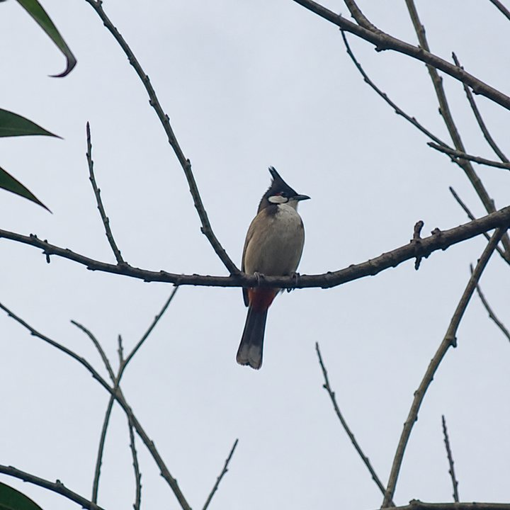

当前
简介较长，识别备注在记录里
← 返回地图

树麻雀
Passer montanus
SR · 稀有
已可靠到 种
简介
树麻雀是雀形目雀科麻雀属的一种小型鸟类。它常活动于人类居住区附近，食性较杂，种子、谷物和昆虫都会取食。分布广泛，适应性强，是许多地方最常见的鸟类之一。
分类
- 界动物界 · Animalia
- 门脊索动物门 · Chordata
- 纲鸟纲 · Aves
- 目雀形目 · Passeriformes
- 科雀科 · Passeridae
- 属麻雀属 · Passer
- 种树麻雀 · Passer montanus
记录
- 拍摄时间
- 2026/10/12 09:18
- 位置
- 江西 · 井冈山
- 识别
- Gemini · gemini-3.6-flash
- 识别备注
- 识别到种；未见明显混淆特征。
现在的简介同时承担了分类、生境、食性和常见度；识别备注在记录末尾，标题更像技术附注。